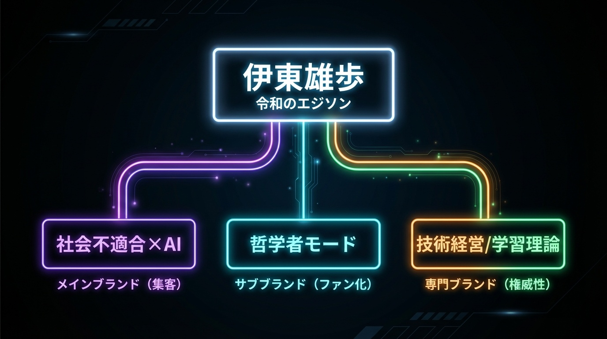

アカウント設計

1. 社会不適合×AI
@yuho_misfit
「社会に馴染めなかった人がAIで逆転する方法を教える人」
ターゲット
- 会社で浮いている人
- 「普通」ができなくて辛い人
- ADHD傾向がある人
- AI活用に興味がある人
- 副業・起業志望者
プラットフォーム
- Twitter（メイン）毎日3-5ツイート
- note 週1-2本
- YouTube（将来）
コンテンツ4本柱
共感系40%
AI実践系30%
マインド系20%
実績・告知10%
トーン
KPI目標（6ヶ月）
5,000
Twitterフォロワー
10,000
note月間PV
500
メルマガ/LINE登録
2. 哲学者モード
@yuho_think
「常識を疑い、世界の見方を変える視点を提供する人」
⚠️ このアカウントは「バズらせない」— 数より深さ、わかる人にわかればいい
ターゲット
- 本をよく読む人
- 哲学・思想に興味がある人
- 「なぜ？」を考えるのが好きな人
- 表面的なノウハウに飽きた人
プラットフォーム
- Twitter 週3-5ツイート
- note 月2-3本（深掘りエッセイ）
コンテンツ4本柱
問いかけ系35%
成長力学30%
世界観系25%
引用・紹介10%
トーン
KPI目標（6ヶ月）
1,000
フォロワー（質重視）
3,000
note月間PV
100
コアファン
3. 技術経営者
@yuho_tech_ceo
「技術と経営の両方がわかるAI専門家」
ターゲット
- 経営者 / CTO / 事業責任者
- AI導入検討中の企業
- DX推進担当者
- 信頼できる技術パートナーを探している人
プラットフォーム
- Twitter 週2-3ツイート
- note 月1-2本
- LinkedIn 週1投稿
コンテンツ4本柱
実績・事例40%
技術解説25%
経営×技術25%
登壇・メディア10%
トーン
KPI目標（6ヶ月）
3件
月間問い合わせ
1回
月間登壇/取材
500
LinkedIn接続
4. 学習理論専門家
@yuho_learning
「科学的な学習理論を実践で使えるレベルに落とし込む人」
ターゲット
- 教育者 / 研修担当者
- 学習意欲の高い社会人
- 部下の成長に悩む人
- 科学的根拠のあるメソッドを求める人
プラットフォーム
- Twitter 週3-5ツイート
- note 週1本
- YouTube（将来）月2本
コンテンツ4本柱
成長力学解説35%
実践ワーク30%
NLP/心理学20%
事例・成果15%
トーン
KPI目標（6ヶ月）
2,000
Twitterフォロワー
5,000
note月間PV
5件
月間講座申込
🎯 運用優先順位
Phase 1
1-3ヶ月: 社会不適合×AI に全集中
まずはメインブランドを確立。広く認知を取る。
Phase 2
4-6ヶ月: 哲学者モード 開始
コアファン向けの深いコンテンツ。質重視。
Phase 3
7-12ヶ月: 技術経営 / 学習理論 開始
事業連携を意識した専門ブランド展開。